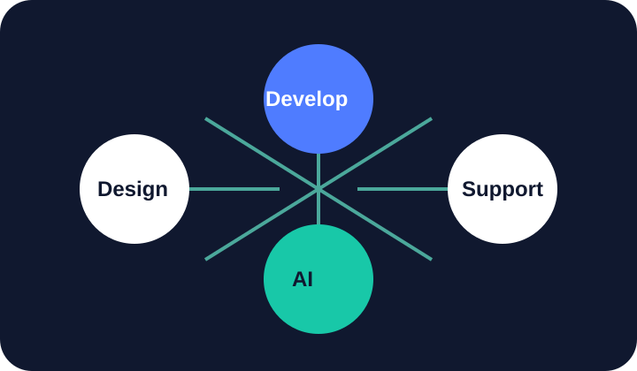

Who we are
A senior WordPress partner for business owners who want clarity.
NolanWP is a fictional national agency built around plain-language strategy, careful implementation, and long-term website care.

Calm process, strong technical judgment.
We help teams make better website decisions across design, development, maintenance, support, hosting guidance, SEO, analytics, performance, WooCommerce, and AI automation.
- Business-first recommendations
- Maintainable classic WordPress builds
- Accessible, responsive interfaces
- Support plans that keep momentum after launch